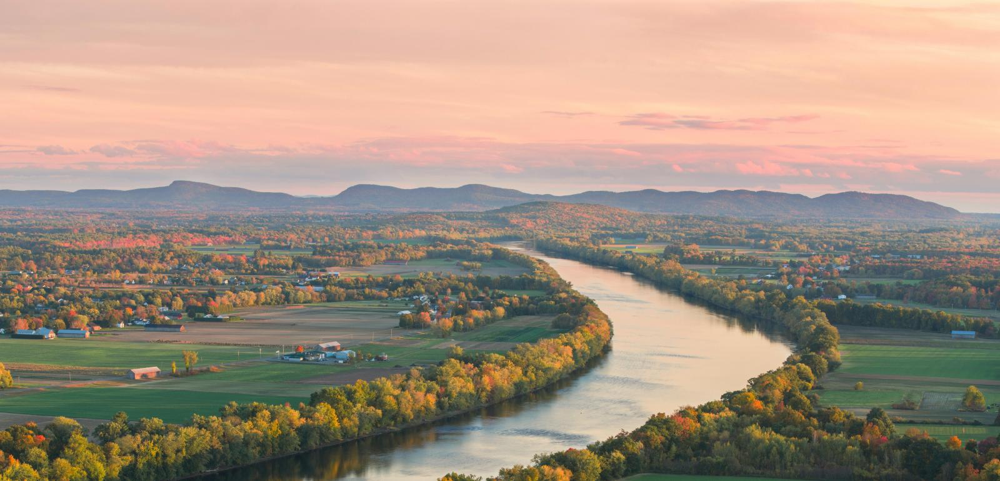
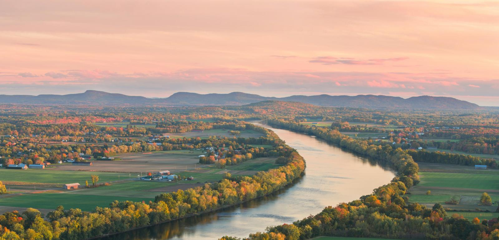

Western Massachusetts has some great outdoor spots to explore. Are you new to
the area or just want to find out more about some of the region's best places for hiking,
walking, biking, etc? We'll help you decide where to visit next! With reviews, photos, and
information on each trail. Valley Trail Finder provides all you need to plan your next
adventure in the gorgeous Pioneer Valley! Looking for a hiking buddy or wanting to find out
where others are making plans? Check out our events page!
 
